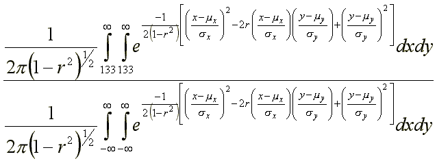

to "On using
multiple tests for high IQ society admissions"
by Grady Towers
published posthumously with permission from the
author
Letter dated Jan. 12, 2000
I'm afraid I'm going to have to eat crow.
Years ago I read The Scientific Analysis of Personality by Raymond B. Cattell. In this book, Dr. Cattell discussed the selection problems of Mensa using fluid versus crystallized tests of intelligence, and how they tended to select different subjects. He gave an example (p. 306) of two tests that correlated .7 [which is about average for all highly reliable tests] that were used for selection purposes. He claimed that if selection were set for the top 5 percent of the general population, then given the .7 condition for a correlation, only 1 percent would pass both tests.
Since I was interested in what % would pass both tests at the two percent level, and since I knew that the phi correlation -- given certain assumptions approximated the product moment correlation -- I worked up a simple algorithm that gave me the answers I was looking for. As I got about the same answer for 5 percent cutoffs as Cattell did, I thought I had done it right.
However, I am now not nearly so sure that either Cattell or I got it right. The person who scanned your "page" caused me to re-examine what I had done and work out a new approach. Here's what I've done.
To solve the problem for Mensa all one has to do is solve the following ratio:

where mx = 100, my = 100, sx = 16, sy = 16, r = .7
Unfortunately, my last calculus course was 30 years ago, and even if it weren't, I couldn't have evaluated double integrals like these on the best day of my life. So it's a good thing I don't have to. Instead, I took two hypothetical tests with means of 100, standard deviations of 16, and a correlation of .7, and I calculated the theoretical number expected within a 1/2 IQ point by 1/2 IQ point square for 158,000 plus squares. Then I added them up. After that I added up all the squares above 133 IQ on both tests and divided by the total found from the full data field. The ratio should be the proportion that passed both tests.
> 133 : .0064061692
> 150 : .00014748463
> 164 : 2.6393845 x 10-6
.0064061692 .02 |
@ |
.320 |
About 32% of Mensans pass both tests. | |
.0001474846 .001 |
@ |
.147 |
About 15% of Triple Nine members would pass both tests. | |
2.6393845 x 10-6 .000030303 |
@ |
.087 |
About 9% of Prometheus members would pass two tests at the cutoff |
I regret the mistake. Quandoque bonus dormitat Homerus. (Sometimes even good Homer nods.)
Grady M. Towers
P.S. I know you're a good programmer. Try verifying this yourself before posting it on the net. [I have not verified this -- DTM]
Source Code printout (BASIC)
20 REM ! OPEN # 30 LET Q=1 40 LET R=.7 50 LET N=0 60 LET M1=100 70 LET M2=100 80 LET S1=16 90 LET S2=16 100 LET K1=(1/(2*PI*(SQR (1-(R*R))))) 110 LET K2=(-1/(2*(1-(R*R)))) 120 FOR Y=Q TO 199 STEP .5 130 FOR X=Q TO 199 STEP .5 140 LET T=K1*(EXP (K2*((((X-M1)/S1)*((X-M1)/S1))- (2*R*((X-M1)/S1)*((Y-M2)/S2))+(((Y-M2)/S2)*((Y-M2)/S2))))) 150 LET N=N+T 159 CLS 160 PRINT Y 170 NEXT X 180 NEXT Y 190 CLS 200 PRINT N
Line 20 is instructions for my compiler. This program will compute the density for the whole data field. Once you have that, reset Q at line 30 for your desired cutoff score and get a new N. Divide this new N by the one obtained for the full data field.
Return to the Uncommonly Difficult I.Q. Tests page.